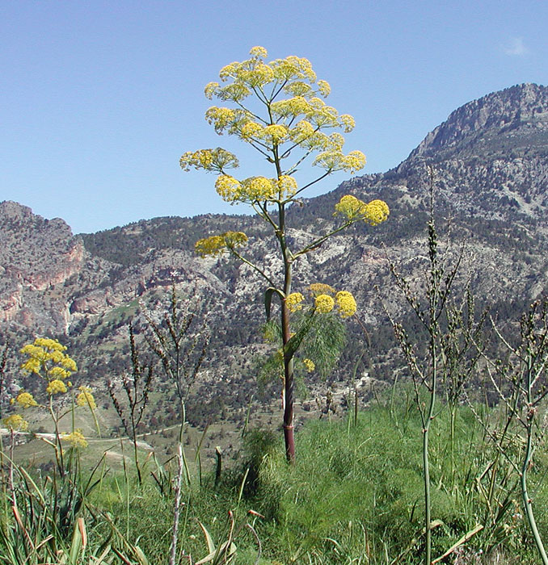
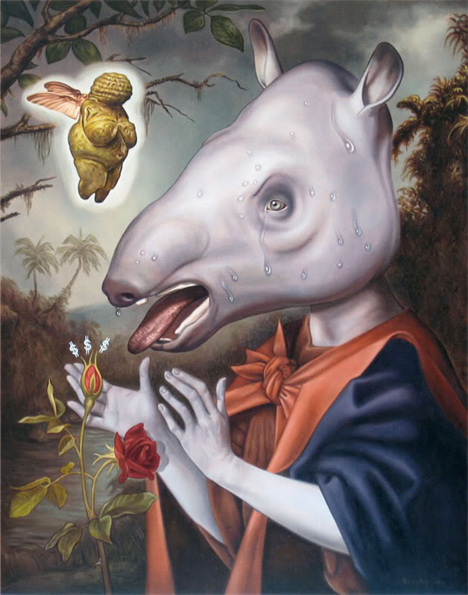

– Working Hands –
and Flowers
in Their Heart
[Fascinated by the man’s story, I ask for more details...
And so we start walking, towards the fields]
I am home for the summer holidays, in Italy.
As I am wandering in this sea of grass surrounded by oaks, bamboos, cherry, apple and fig-trees, I look around and right next to me I see a couple of fennel plants.

Looking at them reminds me of how, a handful of centuries ago, these plants had a totally different value and purpose. Fennel, with bright green stems and golden flowers, is considered an herb with ancient medicinal properties, as well as carminative properties and it is used in French and Italian cuisine as an aromatic herb.

Together with another plant called Sorghum
In my hometown — a quiet village called Percoto, right in the middle of a triangle of very historical cities, Udine, Cividale and Palmanova
In Friuli
The smart persistence of Inquisitorial figures and their vaguely insinuating queries opened up a portal towards the most distorted vision of this group of people, finally placing them within diabolical attributes.
This pagan cult had absolutely nothing to do with witchcraft or devilish traditions, instead, the Benandanti’s practice can be associated with pre-Christian Shamanism, and had a holistic vision of the earth carrying great agricultural knowledge. This knowledge was eventually silenced throughout the centuries, and we must think of a popular knowledge, where traditional and folkloristic elements of the group could have added to the bigger historical picture of this piece of earth which I call my

In March 1965, an Italian historian, Carlo Ginzburg, at the end of his studies at the Scuola Normale Superiore in Pisa, wrote a thesis that had for subject the Benandanti. He researched throughout many Archives between Venice, Milan and Dublin, but mostly within the Friulian region, in a city called Udine. There, he consulted the city archive, the library and the archives of the Archiepiscopal Curia. His thesis is a collection of trial confessions that took place between 1574 and 1580 in Valli del Natisone, and a very important document for the memory of the Benandanti’s history.
So yes, we may think of a knowledge that could have added to Friuli’s bigger historical picture, but we also must think of a knowledge that could serve contemporary purposes and design the mirrored image of the 2020’s Friulian Society: a society that I constantly observe, a society that, as well as many others, has lost connection with its generous land, preferring digital company over a breath of fresh air.
{Intentions}
With the structure of a portrait in mind, in the foreground I see their relationship with Nature.
When reading the earlier confessions I see images that I could define “visionary”, stories whose balance between fact and fiction seems extremely wobbly at first. Stories perhaps formulated metaphorically but whose fantasy finds a real counterpart in the plane of reality.
So in the first chapter of my thesis, I will dig into their hermetic knowledge and connections with Shamanism, narrating their relationships with Nature and their willingness to die for it.
Only in the background of this painting, my mind finds space for the Inquisitors, but they are moving fast towards me. While initially questioning the group of people, their quick prejudice takes over and begins to manipulate the image of the Benandanti, their beliefs and practices, according to what seemed wicked and demoniac at the time.
This will be the subject of the second chapter, a series of events leading to a breakthrough that turned the Benandanti’s beneficial intentions into dark sorcery, that will explain how this kind of knowledge has been colonized, while asking myself why these types of knowledge always get silenced.
In the third chapter I will reflect and investigate on how the colonization of ancient knowledge reflected on our society’s values and behaviours, finally framing this moving portrait with reflections on the metaphorical meaning of “fertility” and its interpretations.
Did something that seems so far back in the past survived, perhaps embedded in our sleeping memory? If a kind of knowledge like this would have survived and applied in everyday actions, what would our society look like?
I would think that the resilience of a culture is cuffed to the carriers’ loyalty to the culture itself, but how can the cultural value of any popular heritage try to remain untouched if sources of power — religious, political, etc — claims the right to devour it?
In a region whose soil is so rich and could provide for “any” man’s desirable goods, people selfishly transcend reality and find shelter in digital comfort, forgetting the simplest and purest values of humanity.
There are many stories like the one I am about to tell you, from all over the world, they carry great enchantment and resilience, and at this point I must ask myself...
How did it happen that nowadays everything and everyone seems so distantly scattered, soul-less?
